Regression comparison
Download resultsAggregation weights
\widehat y(x)=y_{\rm mean}+y_{\rm std}\sum_{h=1}^{H}\beta_h\mu_h(x)Coefficients can be negative and need not sum to one. Intervals describe coefficient uncertainty; the dashed reference is DE’s fixed 1/H weight.
BDKN

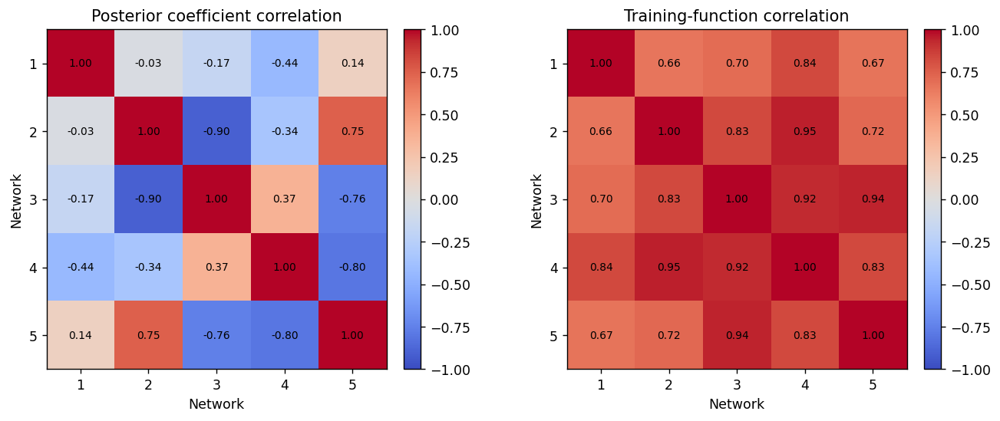


Each density panel uses its own X range for readability; coefficient intervals above share a common axis. Prior reference conditions on fitted noise. Contribution shares use held-out inputs; test targets are used only for scoring.
| Network | β mean | 95% low | 95% high | P(β > 0) | Contribution share | Test RMSE | Test NLL |
|---|---|---|---|---|---|---|---|
| 1 | 0.07974 | -0.37819 | 0.53766 | 0.63477 | 0.01004 | 0.47907 | 1.01693 |
| 2 | -0.07102 | -0.09714 | -0.04489 | 0.00000 | 0.24858 | 5.51114 | 2.71606 |
| 3 | 1.27983 | 0.98874 | 1.57093 | 1.00000 | 0.65958 | 0.37050 | 0.43076 |
| 4 | -0.15258 | -0.60718 | 0.30203 | 0.25351 | 0.04110 | 0.41957 | 1.01608 |
| 5 | -0.10384 | -0.52756 | 0.31987 | 0.31393 | 0.04070 | 0.38982 | 0.57439 |
Functional repulsion · BDKN
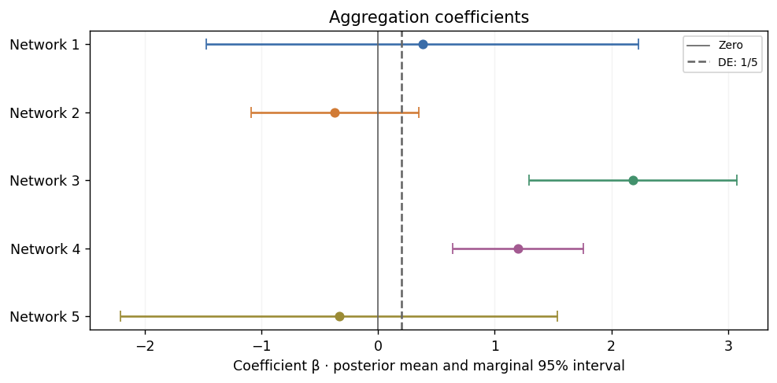
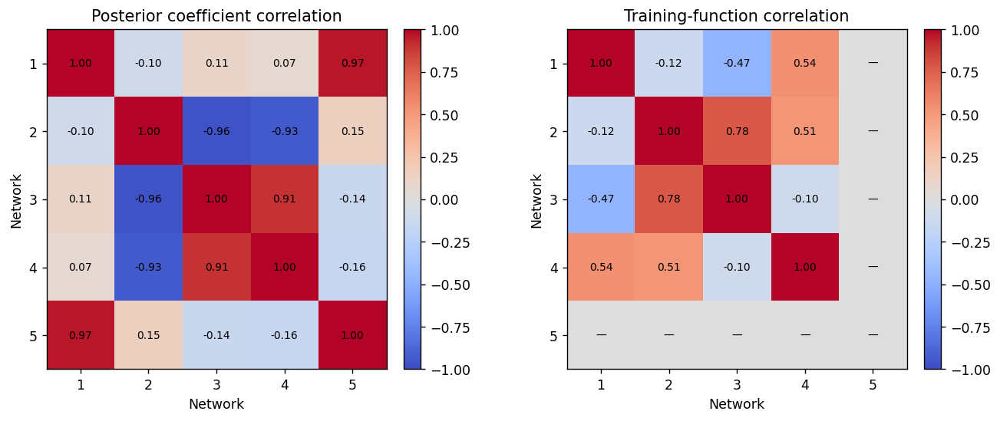
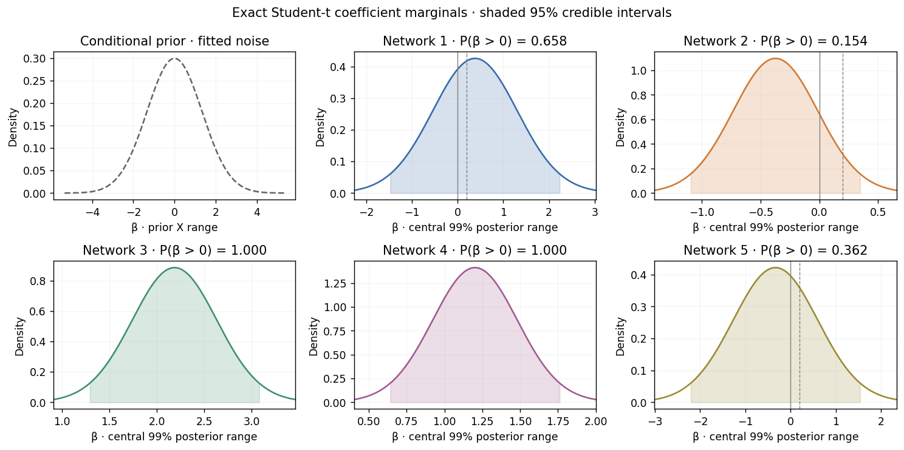
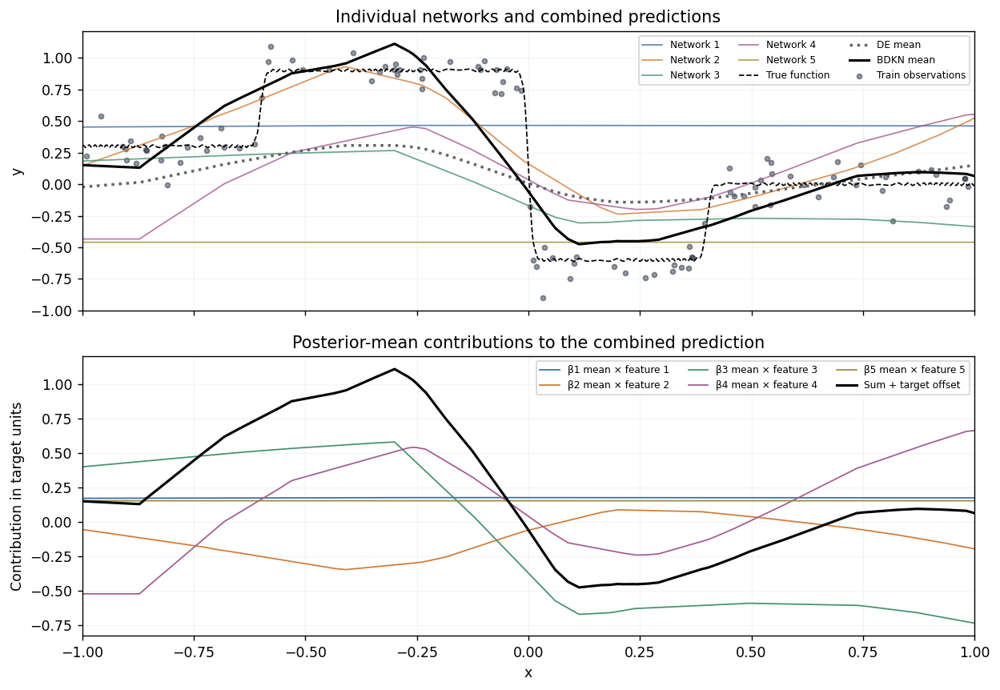
Each density panel uses its own X range for readability; coefficient intervals above share a common axis. Prior reference conditions on fitted noise. Contribution shares use held-out inputs; test targets are used only for scoring.
| Network | β mean | 95% low | 95% high | P(β > 0) | Contribution share | Test RMSE | Test NLL |
|---|---|---|---|---|---|---|---|
| 1 | 0.38073 | -1.47256 | 2.23401 | 0.65777 | 0.13614 | 0.59431 | 0.76461 |
| 2 | -0.37232 | -1.09174 | 0.34711 | 0.15351 | 0.10646 | 0.30864 | 0.39677 |
| 3 | 2.18527 | 1.29290 | 3.07765 | 1.00000 | 0.40811 | 0.46761 | 0.60182 |
| 4 | 1.20171 | 0.64249 | 1.76093 | 0.99998 | 0.23009 | 0.49523 | 0.84057 |
| 5 | -0.33495 | -2.20632 | 1.53641 | 0.36163 | 0.11921 | 0.85033 | 1.28071 |
Weight repulsion · BDKN
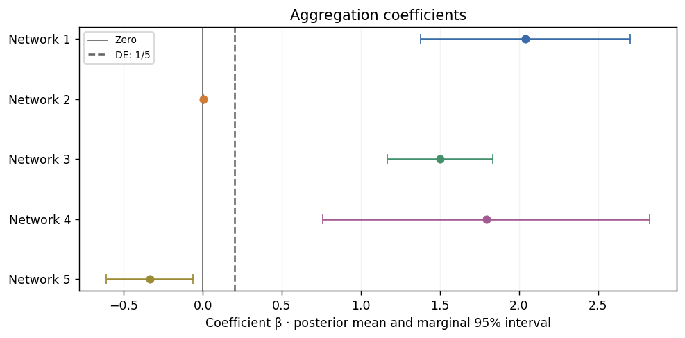
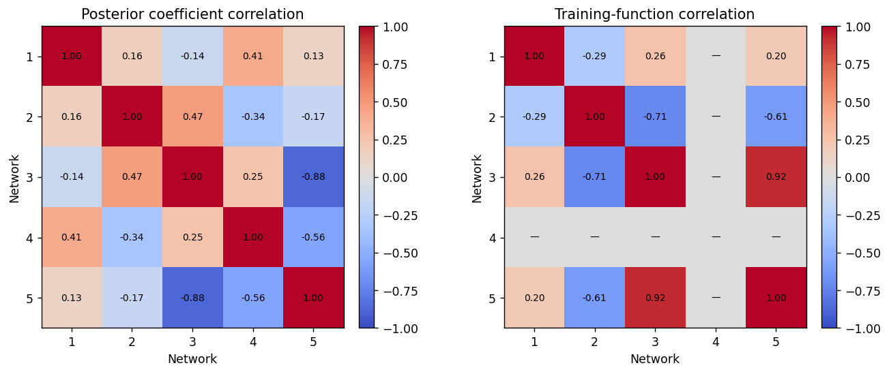
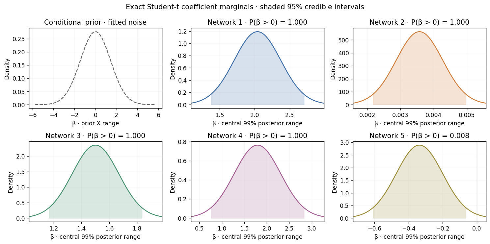
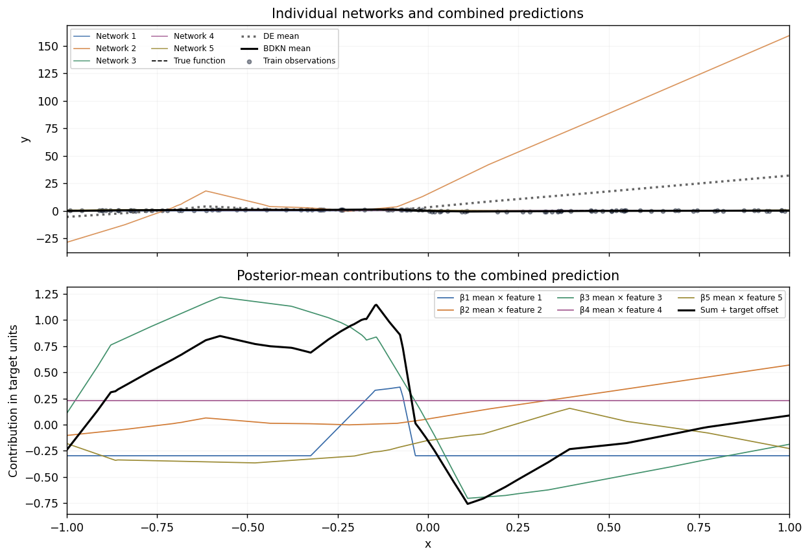
Each density panel uses its own X range for readability; coefficient intervals above share a common axis. Prior reference conditions on fitted noise. Contribution shares use held-out inputs; test targets are used only for scoring.
| Network | β mean | 95% low | 95% high | P(β > 0) | Contribution share | Test RMSE | Test NLL |
|---|---|---|---|---|---|---|---|
| 1 | 2.04029 | 1.37732 | 2.70326 | 1.00000 | 0.18314 | 0.60089 | 1.03398 |
| 2 | 0.00357 | 0.00217 | 0.00497 | 1.00000 | 0.11788 | 71.75449 | 7.64308 |
| 3 | 1.50095 | 1.16634 | 1.83556 | 1.00000 | 0.42516 | 0.30261 | 1.49940 |
| 4 | 1.79313 | 0.75848 | 2.82777 | 0.99957 | 0.14854 | 0.53915 | 1.12007 |
| 5 | -0.33630 | -0.60923 | -0.06338 | 0.00812 | 0.12528 | 0.47744 | 0.71584 |
First-order repulsion · BDKN
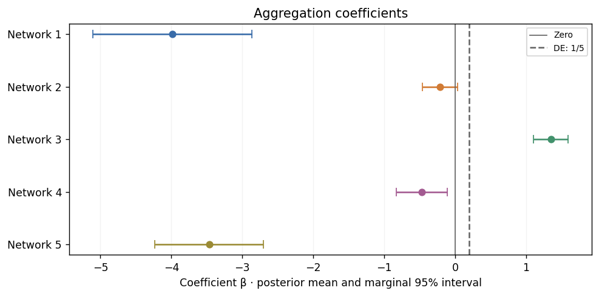
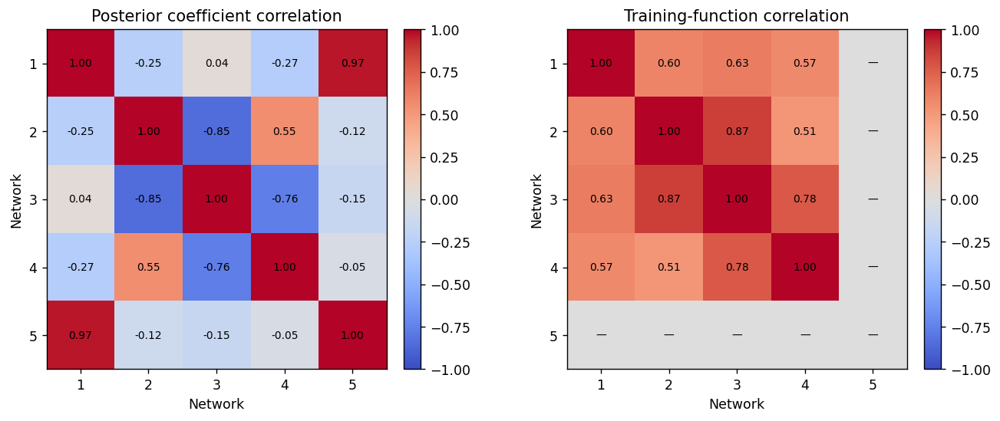
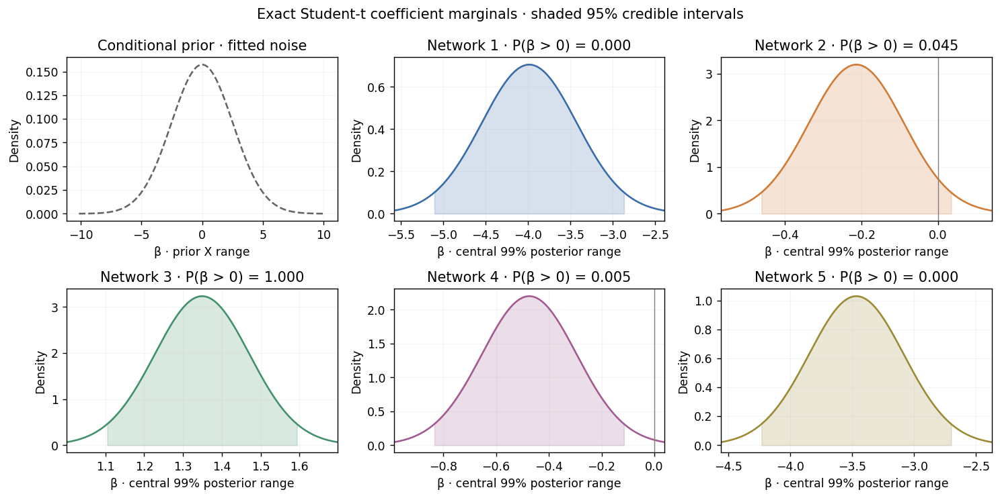
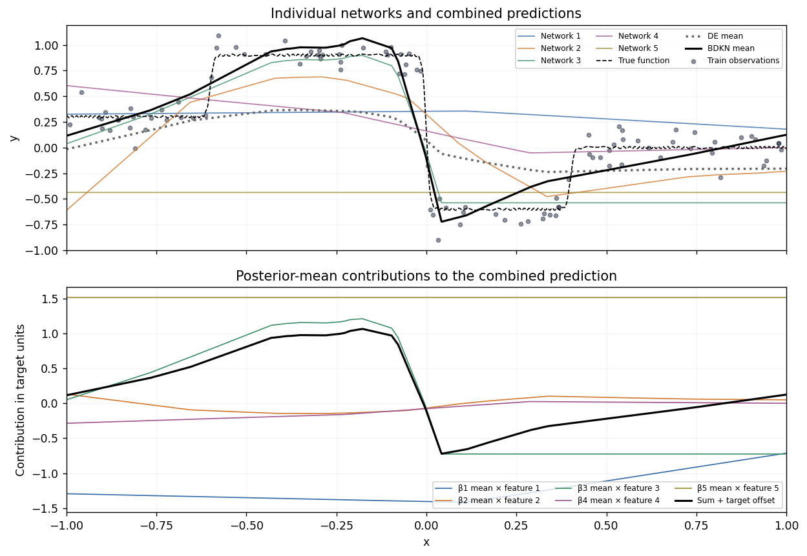
Each density panel uses its own X range for readability; coefficient intervals above share a common axis. Prior reference conditions on fitted noise. Contribution shares use held-out inputs; test targets are used only for scoring.
| Network | β mean | 95% low | 95% high | P(β > 0) | Contribution share | Test RMSE | Test NLL |
|---|---|---|---|---|---|---|---|
| 1 | -3.98339 | -5.10323 | -2.86355 | 0.00000 | 0.33353 | 0.53129 | 0.67437 |
| 2 | -0.21330 | -0.46039 | 0.03378 | 0.04493 | 0.02248 | 0.38622 | 1.07105 |
| 3 | 1.34906 | 1.10491 | 1.59321 | 1.00000 | 0.20119 | 0.35169 | 0.40555 |
| 4 | -0.47404 | -0.83291 | -0.11518 | 0.00507 | 0.02838 | 0.42668 | 0.75419 |
| 5 | -3.46639 | -4.23274 | -2.70003 | 0.00000 | 0.41442 | 0.83269 | 1.26600 |